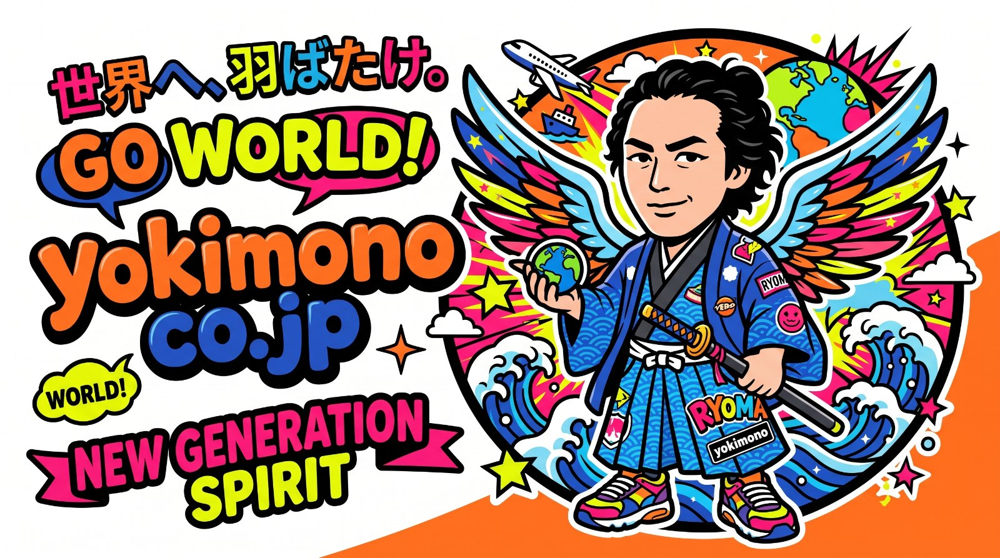
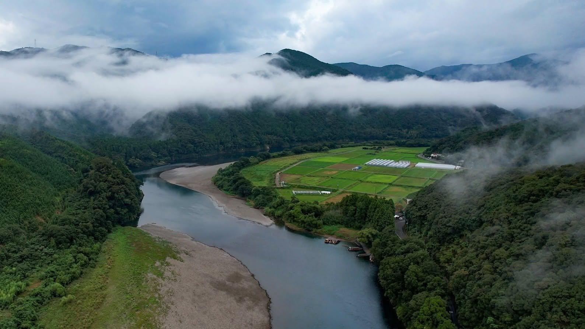
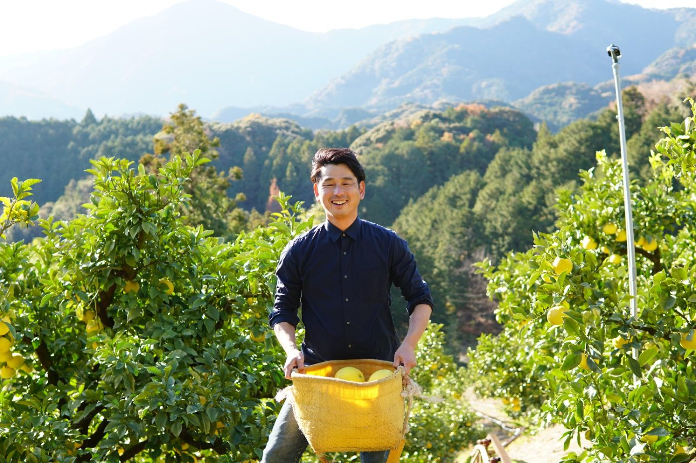
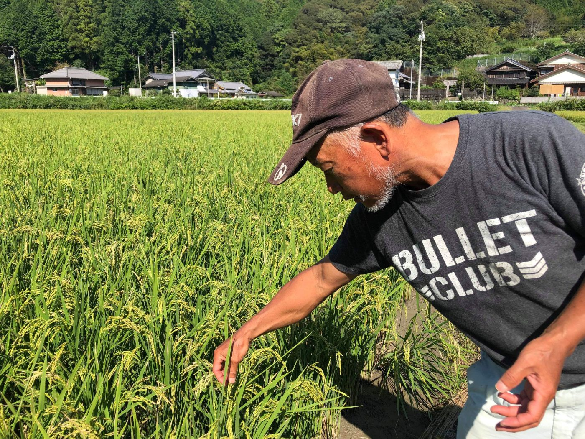
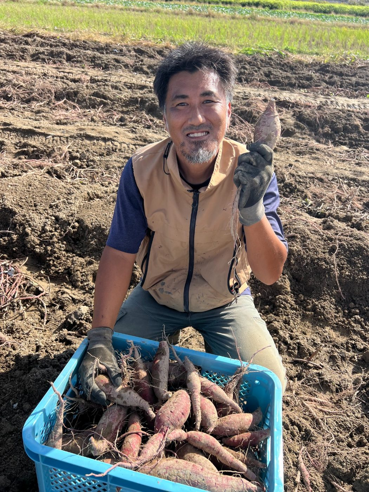
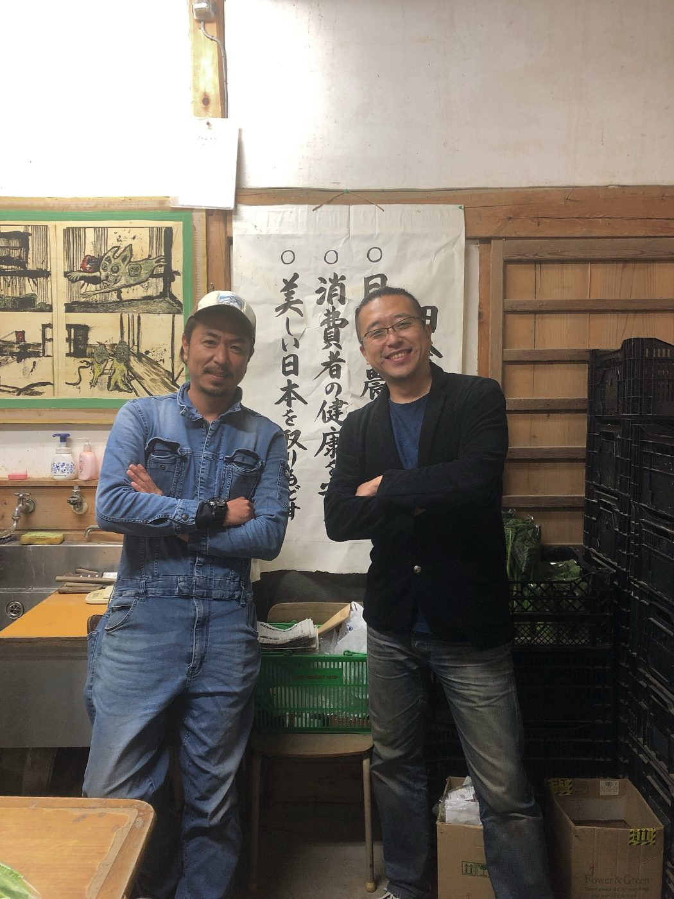
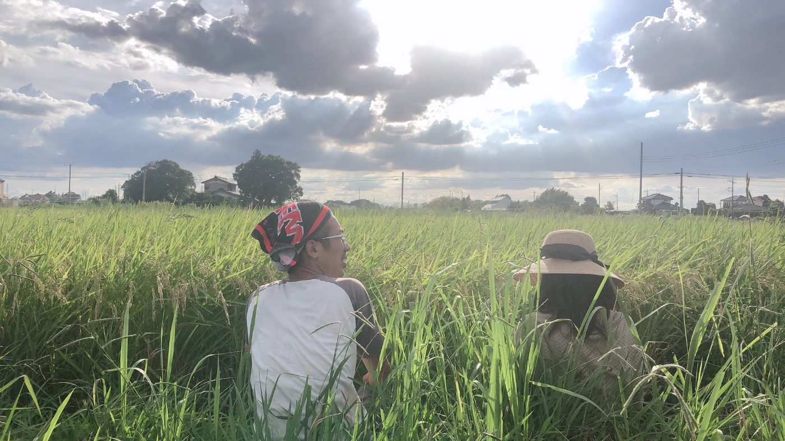
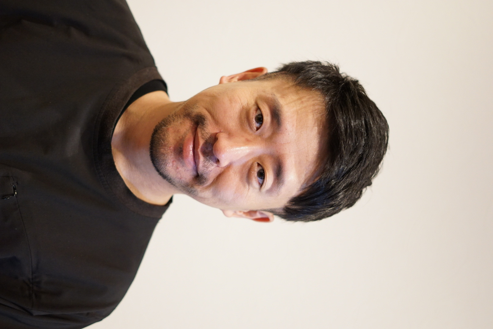

文旦の段々畑とともに
山あいの段々畑で、高知の初春を告げる文旦を育てるつくり手の話。







日本語の「よき」には、いくつもの意味があります。高知で出会う、こだわりを持つヒト。そのヒトが生む、心が動くコト。そして手に取れる、確かなモノ。三つの「よき」を、三つの入口から届けます。
高知の生産者、職人、つくり手。その想いとこだわりを、ストーリーとして紹介します。
山あいの段々畑で、高知の初春を告げる文旦を育てるつくり手の話。
土と水に向き合い、米づくりを続ける生産者の話。
畑から届く季節の味と、その背景にある想い。
訪れて、体験して、関わる。高知の暮らしと産地に触れる、イベントやプロジェクトをお知らせします。
次回のイベントは、
近日公開します。
収穫体験や産地をめぐるツアー、マルシェ出店などの最新情報は、Instagramで随時お知らせします。
四万十エリアで立ち上げた、軽トラックの荷台で楽しむサウナ体験。
関係人口の創出や移住の受け入れにつながる、暮らすように泊まる場所。
県内道の駅での訪日客向け企画と、SNSを活用した集客動線づくり。
生産者の現場を訪ね、つくり手と売り手をつなぐ視察の企画・同行。
よきヒトが、手間ひまかけてつくったもの。身体にも自然にも優しいこだわりをぎゅっと詰めて、オンラインショップでお届けします。
食 × 地域の現場プロデューサー
こだわりはあるのに、どう売っていいかわからない。そんな作り手のそばで、戦略を立てるだけでなく、実行まで一緒に走ります。
小売・卸・百貨店・業務用・EC・海外まで、商品に合ったチャネルを選び、交渉まで担います。
市場調査からブランドストーリー設計、加工品の商品化・OEM連携まで。0→1の事業化を支援します。
総代理店権の交渉、輸出入、補助金・助成金の申請から実績報告、クラウドファンディング運営まで実務で対応します。
民泊・体験型コンテンツやSNSを活用し、人が訪れ、関わり続ける仕組みをつくります。
地方の食品・農産物を、もっと広く売り出したい生産者・メーカー
地域資源を活かした新規事業・6次化を検討している自治体・事業者
海外販路・インバウンドに踏み出したいが、何から始めればいいかわからない方
補助金・助成金を活用して、リスクを抑えて事業をスタートしたい方
マヌカハニーの国内総代理店権を取得し、世界初・特許製法ののど飴を商品化・販売しました。
NZ産コスメ・加工食品の貿易商社を創業。輸入卸に加え、百貨店出店とウェブストアを運営しました。
「誕生日プレゼント」で検索1位を獲得。楽天出店、サイトのディレクション、販促、在庫・出荷体制の構築まで一貫して推進しました。
有機生産者団体の運営、助成金の申請・運用・報告、販路開拓を担当しました。
関係人口の創出や移住の受け入れにも取り組んでいます。自治体からバイヤー視察の有識者として招かれた実績もあります。
青果・農園・道の駅などの経営企画・営業戦略・ブランディングに参加。商品企画からプロダクトデザインまでを一気通貫でサポートするほか、道の駅のインバウンド企画・SNS集客動線の構築も担当しています。
こだわりを持つ生産者や腕のある職人が、きちんと儲かる仕組みをつくる。昔の個人商店のように、かゆい所に手が届く真心のこもった伴走を大切にしています。

ギフト特化ECの立ち上げ、ニュージーランド産コスメ・食品の貿易商社の創業、百貨店への出店、世界初の特許製法によるマヌカハニーのど飴の商品化。商品企画からブランディング、販路開拓、EC、海外取引まで、いくつもの事業をゼロから立ち上げてきました。
2021年に高知県へ移住。有機生産者団体の事務局長を経て、現在は生産者・メーカーの商品企画や販路開拓、地域企業の経営・営業戦略アドバイザーとして、一次産業と地方創生の現場に深く関わっています。
事業のご相談、取材・掲載のご依頼、イベントの共催、商品のお取引まで。「こんなことお願いしてもいいのかな…」というレベルでも大歓迎です。
MAILinfo@yokimono.co.jp